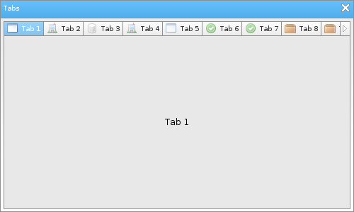

Löve Frames - The Tabs Object
Return to Index
Information
The tabs object functions a lot like the tabs you would find in an internet browser.
Example Use
local frame = loveframes.Create("frame")
frame:SetName("Tabs")
frame:SetSize(500, 300)
frame:CenterWithinArea(unpack(demo.centerarea))
local tabs = loveframes.Create("tabs", frame)
tabs:SetPos(5, 30)
tabs:SetSize(490, 265)
local images = {"accept.png", "add.png", "application.png", "building.png", "bin.png", "database.png", "box.png", "brick.png"}
for i=1, 20 do
local image = "resources/images/" .. images[math.random(1, #images)]
local panel = loveframes.Create("panel")
panel.Draw = function()
end
local text1 = loveframes.Create("text", panel)
text1:SetText("Tab " ..i)
text1:SetAlwaysUpdate(true)
text1.Update = function(object, dt)
object:Center()
end
tabs:AddTab("Tab " ..i, panel, "Tab " ..i, image)
end

Event Callbacks
The tabs object has no unique event callbacks.
Methods
AddTab - Add a tab to the object
- Returns 1 value: tabbuton [object]
- Note 1: Each tab must have a base object. The base object is the second argument provided.
- Note 2: The last two arguments of this method are optional and are used to specify callback functions for the tabbutton object that will be created after calling this method. More specifically, these two callbacks are OnOpened (called when the tab button becomes active or is "opened") and OnClosed (called when the tabbutton becomes inactive or is "closed"). The tabbutton object will provide itself as an argument whenever it calls one of these callbacks.
- Note: This method is used by the object internally. You should not use it unless you know what you are doing.
- Returns 1 value: button width [number]
- Note: This method is used by the object internally. You should not use it unless you know what you are doing.
- Returns 1 value: padding [number]
- Returns 1 value: tabnumber [number]
- Returns 1 value: scroll amount [number]
- Returns 1 value: scroll amount [number]
- Returns 1 value: dtscrolling [boolean]
- Returns 1 value: button_area_x [number]
- Returns 1 value: button_area_width [number]
- Returns 1 value: autowidth [bool]
- Returns 1 value: tabbuton [object]
- Note 1: Each tab must have a base object. The base object is the second argument provided.
- Note 2: The last two arguments of this method are optional and are used to specify callback functions for the tabbutton object that will be created after calling this method. More specifically, these two callbacks are OnOpened (called when the tab button becomes active or is "opened") and OnClosed (called when the tabbutton becomes inactive or is "closed"). The tabbutton object will provide itself as an argument whenever it calls one of these callbacks.
local tabbutton = object:AddTab(name[string], object[object], tip[string], image[image], onopened[func], onclosed[func])AddScrollButtons - Adds scroll buttons to the object.
- Note: This method is used by the object internally. You should not use it unless you know what you are doing.
object:AddScrollButtons()GetWidthOfButtons - Gets the entire width of the object's button
- Returns 1 value: button width [number]
- Note: This method is used by the object internally. You should not use it unless you know what you are doing.
local width = object:GetWidthOfButtons()SwitchToTab - Switchs to a different tab
object:SwitchToTab(tabnumber[number])SetPadding - Sets the padding of the object
object:SetPadding(padding[number])GetPadding - Gets the padding of the object
- Returns 1 value: padding [number]
local padding = object:GetPadding()SetTabHeight - Sets the height of the tab buttons
object:SetTabHeight(height[number])GetTabNumber - Gets the object's tab number
- Returns 1 value: tabnumber [number]
local tabnumber = object:GetTabNumber()RemoveTab - Removes a tab from the object's list of tabs
object:RemoveTab(tabid[number])SetButtonScrollAmount - Sets the amount that the object's scroll buttons will scroll the object's list items by
object:SetButtonScrollAmount(scrollamount[number])GetButtonScrollAmount - Sets the amount that the object's scroll buttons will scroll the object's list items by
- Returns 1 value: scroll amount [number]
local scrollamount = object:GetButtonScrollAmount()SetMouseWheelScrollAmount - Sets the amount that the mouse wheel will scroll the object's list items by
object:SetMouseWheelScrollAmount(scrollamount[number])GetMouseWheelScrollAmount - Gets the mouse wheel's scroll amount
- Returns 1 value: scroll amount [number]
local scrollamount = object:GetMouseWheelScrollAmount()SetDTScrolling - Sets whether or not the object should use delta time when caclulating how many pixels it's scrollbar needs to move
object:SetDTScrolling(dtscrolling[boolean])GetDTScrolling - Gets whether or not the object should use delta time when caclulating how many pixels it's scrollbar needs to move
- Returns 1 value: dtscrolling [boolean]
local dtscrolling = object:GetDTScrolling()SetTabObject - Sets the object of a tab
object:SetTabObject(tab_id[number], tab_object[object])SetButtonAreaX - Sets the x position of the object's button area
object:SetButtonAreaX(x[number])GetButtonAreaX - Gets the x position of the object's button area
- Returns 1 value: button_area_x [number]
local button_area_x = object:GetButtonAreaX()SetButtonAreaWidth - Sets the width of the object's button area
object:SetButtonAreaWidth(width[number])GetButtonAreaWidth - Gets the width of the object's button area
- Returns 1 value: button_area_width [number]
local button_area_width = object:GetButtonAreaWidth()SetAutoButtonAreaWidth - Sets whether or not the width of the object's button area should be set automatically
object:SetAutoButtonAreaWidth(autowidth[bool])GetAutoButtonAreaWidth - Gets whether or not the width of the object's button area should be set automatically
- Returns 1 value: autowidth [bool]
local autowidth = object:GetAutoButtonAreaWidth()